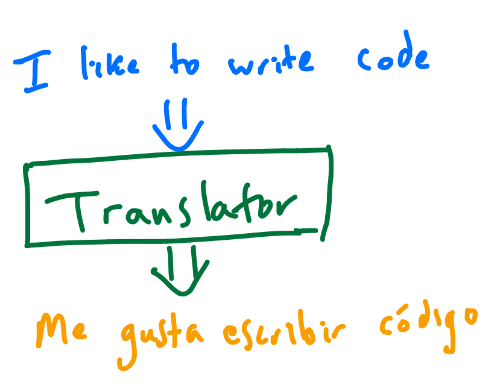
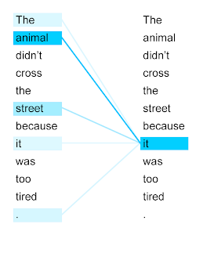
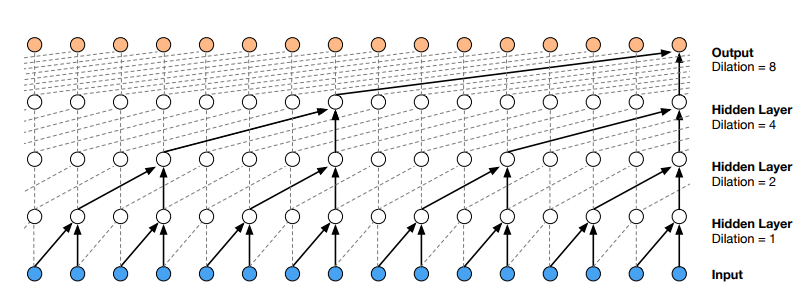
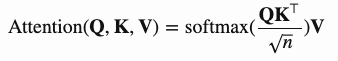
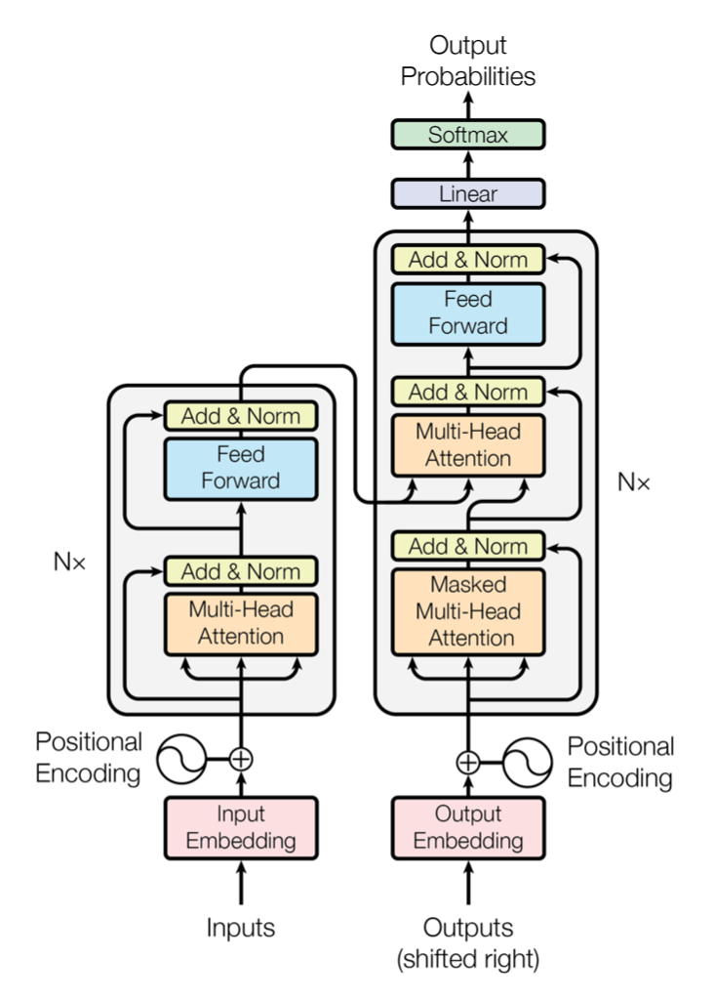
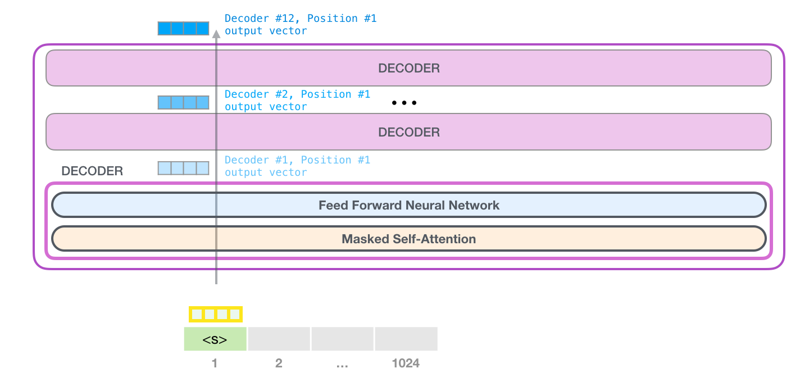

class: center, middle # Language Models From seq2seq to GPT! --- count: false class: center, middle # Language Models From seq2seq to GPT! (press p to see notes and links) --- # Amazing things Prompt: ``` “Oh, the Places You’ll Go!” Dr. Seuss Congratulations! Today is your day. You’re off to Great Places! You’re off and away! ``` Completion: ``` You have brains in your head. You have feet in your shoes. You can steer yourself any direction you choose. You’re on your way! Here’s a little rocket to shoot off toward the sky! It’s your one way ticket to the planet “Dween” with a worth of 100 billion dollars. ... ``` ### How the heck is this possible?!?!? --- # A related problem Generation: ``` You're off and away! ... You have brains in your head. ``` Translation: ``` I like to write code -> Me gusta escribir código ``` ??? Unfortunately we can't answer really answer that question, because our systems our big black boxes :( But we can still learn a lot by walking through some research and seeing what we added each step along the way. At least in my head, the starting point wasn't really generation, but _machine translation_. Generation = complete this phrase. Translation is just translation. --- # Approaching translation .center[] --- count: false # Approaching translation .center[<video controls autoplay style="max-width: 45vw;"> <source src="./imgs/seq2seq_animated.mp4" type="video/mp4"> </video>] ### How is this related to generation? ### How do we build our encoder and decoder? ??? [Encoder-decoder video source](https://jalammar.github.io/visualizing-neural-machine-translation-mechanics-of-seq2seq-models-with-attention/) When we do the translation, we don't read and translate word-by-word, so it's intuitive that we read in the full sentence, extract it's meaning (_context_), and then generate the output translation. With this setup, translation and generation are related because you can just take the decoder by itself, pass it some context, and start generating stuff. Note that the input and output sequences aren't necessarily the same length. A small implementation detail is sometimes people process the sequence backwards to. --- # Recurrent Neural Networks .center[<img src="./imgs/RNN-unrolled.png" style="max-height: 40vh; max-width: 40vw;"/>] - Input vector + hidden state -> Output vector + updated hidden state - Take final hidden state as context - Decode word-by-word by starting with this context as hidden state - Use special <SOS> and <EOS> tokens to mark beginning and end - Input = previously predicted word + hidden state ??? [Unrolled RNN image source](https://colah.github.io/posts/2015-08-Understanding-LSTMs/) If we take the final hidden state after ingesting the full sequence as our context vector, it should contain information from the full sequence. Then, we can decode word-by-word. We're not inputing words directly, but [word embeddings](https://machinelearningmastery.com/what-are-word-embeddings/). The outputs are vectors in the word-embedding vector space, and we can convert them back to words using a distance function (find word closest to this vector). The embedding space is structured so similar words are near each other and some word relationships get translated to the vector space, so the distance function makes sense. --- # Loss Function (categorical cross-entropy) - Output classes are mutually exclusive - Output space dimensionality is manageable ??? For example, if we ran this on videos we probably wouldn't have as much luck since the output space is way higher dimensional. --- # Problems with RNNs - Long-term dependencies .center[<img src="./imgs/RNN-longtermdependencies.png" style="max-height: 17vh; max-width: 40vw;"/>] - Alignment .center[] ??? These problems are pretty related. The first one became clear earlier, since training RNNs on long sequences just didn't work. The core solution was fancier cell internals, which allowed RNNs to selectively forget more naturally (LSTMs, GRUs). There's a great [blog post](https://colah.github.io/posts/2015-08-Understanding-LSTMs/) on this by Chris Olah. This patterns comes up a lot: it's hard to train something, so we add _priors_ specific to the task. The second problem is alignment: what does "it" refer to? Different words in the input have different amounts of relevance to each other. --- # One idea .center[] - Distance between inputs is logarithmic instead of linear ??? I'm not super familiar with this (from WaveNet), but I think doing something like this improves things a bit by compressing paths. --- # Attention .center[] - Scoring function: "how relevant is this input to this output?" - As each word is decoded, generate a _custom_ context vector - Generate a score for each input, measuring relevance - Turn these scores into a set of probabilities with softmax - Weight the hidden-state vectors from each input by the probabilities - Combine this with decoder hidden state - Map to a word vector (the output) - Trainable ??? The score is a function of an input and the decoder hidden state. --- count: false # Attention .center[<video controls autoplay style="max-width: 45vw;"> <source src="./imgs/attention_tensor_dance.mp4" type="video/mp4"> </video>] ??? [Attention video source](https://jalammar.github.io/visualizing-neural-machine-translation-mechanics-of-seq2seq-models-with-attention/) --- # Attention (terms) - Self-attention = input and output are the same .center[] - Multi-headed attention = have a bunch of different scoring functions and combine the results - K,V,Q -- each word embedding gets mapped to Key, Value, and Query vectors .center[] ??? Multi-headed attention seems to me like more an implementation detail than an interesting idea. Query `dot` Key tells us how relevant the key word is to the query word. The normalization is just an implementation detail. Softmax converts the scores to a distribution, which we then use to make a weighted sum of the value vectors. --- # Improving seq2seq - LSTMs/GRUs + Attention solve our two problems pretty well - Sequential encoding-decoding is slow though - Recurence is inherently sequential - Our attention setup ignored positions - This could probably be fixed though ??? If anyone wants to pair on seeing if we can improve seq2seq with attention performance by adding positional info to the inputs I'd be curious :) --- # The Transformer > [Attention Is All You Need](https://arxiv.org/abs/1706.03762) - Get rid of recurrence - Inject positional information to the embeddings and just use attention .center[] ??? Image source: Attention Is All You Need paper Positional information is injected by adding a positional encoding vector to the embedding vectors before inputting them. --- count: false # The Transformer .center[<img src="./imgs/encoder_decoder_stack_transformer.png" style="max-height: 40vh; max-width: 80vw;"/>] - Arbitrarily, stack six encoders and six decoders ??? [Image source](https://jalammar.github.io/illustrated-transformer/) --- count: false # The Transformer .center[<img src="./imgs/zoomed_encoder_decoder_transformer.png" style="max-height: 40vh; max-width: 40vw;"/>] - Self-attention aligns each word with relevant other parts of the input - The output of the feedforward network is passed to the next encoder/decoder - The decoder's self-attention masks future output - The decoder's attention layer aligns each output word with the relevant input ??? [Image source](https://jalammar.github.io/illustrated-transformer/) Without the future output masking, the decoder could trivially predict the rest of the sequence, but then we wouldn't have a good model to do inference with. --- # The Transformer's Encoder .center[<img src="./imgs/transformer_resideual_layer_norm_2.png" style="max-height: 40vh; max-width: 40vw;"/>] ??? [Image source](https://jalammar.github.io/illustrated-transformer/) --- # The Full Transformer .center[<img src="./imgs/transformer_resideual_layer_norm_3.png" style="max-height: 40vh; max-width: 40vw;"/>] - Each word flows through independently ??? At the top, the linear layer maps the output from teh decoder to a n-dimensional vector where n is the size of the vocab. Then the softmax turns the logits into a distribution over output words, giving our prediction. --- # GPT - Autoregressive -- add each output get appended to the input .center[<img src="./imgs/08-gpt3-auto-regressive.gif" style="max-height: 40vh; max-width: 40vw;"/>] ??? [Image source](https://jalammar.github.io/how-gpt3-works-visualizations-animations/) --- count: false # GPT .center[] - Start with token embedding of input word - Add positional embedding - Pass through decoder stack - Multiply by embedding matrix to compute probability distribution over vocabulary ??? [Image source](https://jalammar.github.io/illustrated-gpt2/) --- # GPT Self-Attention .center[<img src="./imgs/gpt2-self-attention-qkv-3-2.png" style="max-height: 40vh; max-width: 40vw;"/>] - We store the key-value matrices from previous steps ??? [Image source](https://jalammar.github.io/illustrated-gpt2/) Since we're doing masked self-attention, we only need the key and value matrices from previous words in the sequence to compute attention. --- # GPT .center[<img src="./imgs/gpt2-output-projection-2.png" style="max-height: 40vh; max-width: 40vw;"/>] - Start with token embedding of input word - Add positional embedding - Pass through decoder stack - Multiply by embedding matrix to compute probability distribution over vocabulary ??? [Image source](https://jalammar.github.io/illustrated-gpt2/) Same thing, just another end-to-end diagram. --- # Links - [The Unreasonable Effectiveness of Recurrent Neural Networks](https://karpathy.github.io/2015/05/21/rnn-effectiveness/) - [Understanding LSTMs](https://colah.github.io/posts/2015-08-Understanding-LSTMs/) - [Attention Is All You Need (Transformer paper)](https://arxiv.org/abs/1706.03762) - [Transformer blog post](https://ai.googleblog.com/2017/08/transformer-novel-neural-network.html) - [Attention? Attention! (blog post)](https://lilianweng.github.io/lil-log/2018/06/24/attention-attention.html) - [Visualizing A Neural Machine Translation Model](https://jalammar.github.io/visualizing-neural-machine-translation-mechanics-of-seq2seq-models-with-attention/) - [The Illustrated Transformer](https://jalammar.github.io/illustrated-transformer/) - [The Illustrated GPT-2](https://jalammar.github.io/illustrated-gpt2/) - [AllenNLP's GPT-2 explorer](https://demo.allennlp.org/next-token-lm?text=AllenNLP) - [Language Models are Few-Shot Learners (GPT-3 paper)](https://arxiv.org/abs/2005.14165)